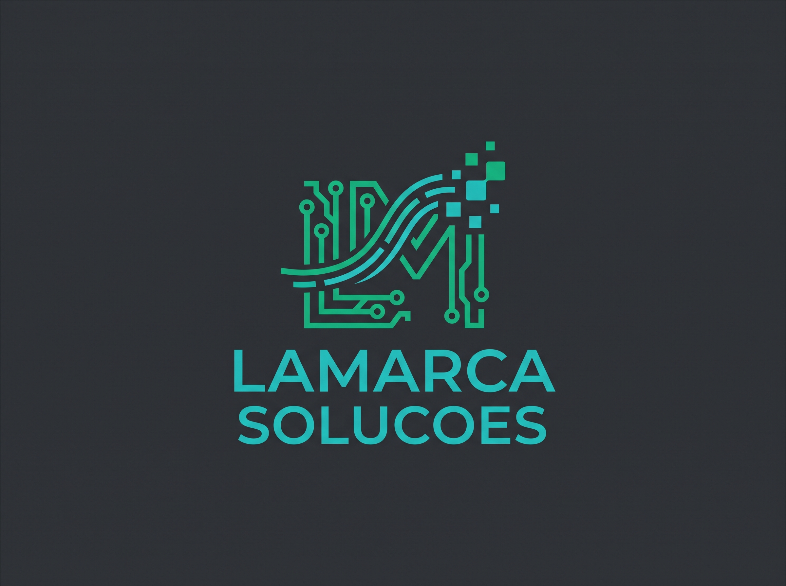
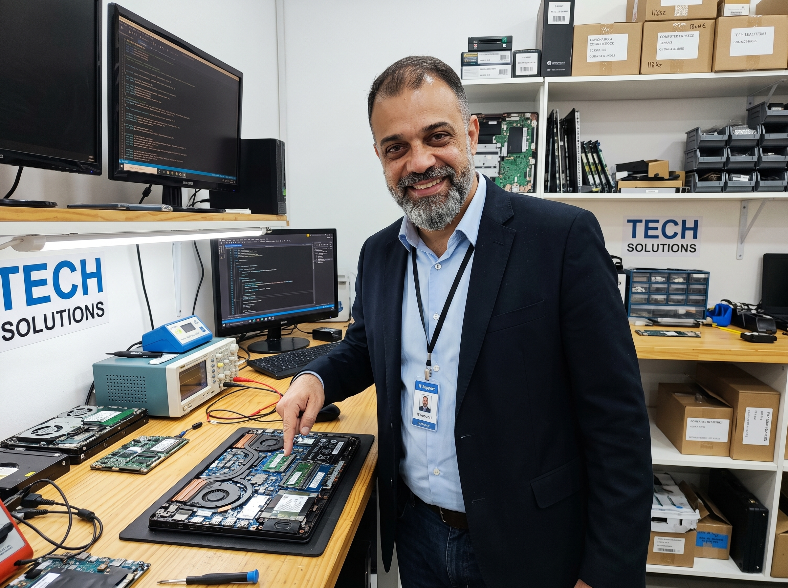
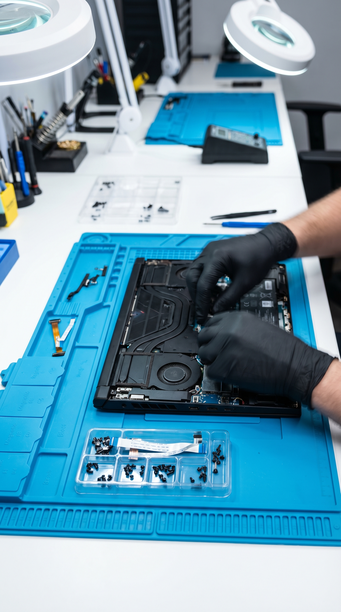

Especialista em suporte técnico avançado, reparo de placas, recuperação de dados e criação de presença digital.
📲 Solicitar Orçamento no WhatsApp
Prazer, eu sou César Lamarca Peregrino, técnico especializado, CEO da Lamarca Soluções e apaixonado por resolver problemas tecnológicos.
Com vasta experiência prática em manutenção avançada e análise de TI de nível 2, meu objetivo é oferecer um serviço transparente, rápido e definitivo. Desde o reparo complexo da placa-mãe do seu notebook até a criação do site do seu negócio: aqui você encontra soluções completas e de confiança.
Diagnóstico avançado e conserto a nível de componente para placas-mãe de notebooks e desktops. Soluções precisas e seguras para salvar seu equipamento.
Limpeza preventiva profunda, troca de pasta térmica de alta performance, substituição de telas, teclados, baterias e melhorias de desempenho (Upgrades).
Restauração completa de sistemas operacionais (Windows/Linux), remoção de vírus e resgate seguro de arquivos importantes perdidos ou corrompidos.
Configuração completa de drivers, programas essenciais e softwares profissionais. Serviço com opção de atendimento remoto rápido!
Desenvolvimento de páginas modernas, rápidas e responsivas (Landing Pages e sites institucionais) para destacar o seu negócio na internet.
Edição, roteiros e produção de conteúdo visual dinâmico voltado para engajar o seu público e impulsionar suas marcas nas redes sociais.
Ideal para reparos físicos complexos, soldas em placas-mãe, trocas de peças e manutenções profundas em computadores e notebooks direto na bancada laboratorial.
Prático e ágil para formatações lógicas, remoção de vírus, instalação de softwares e soluções de configuração em sistemas operacionais à distância.
